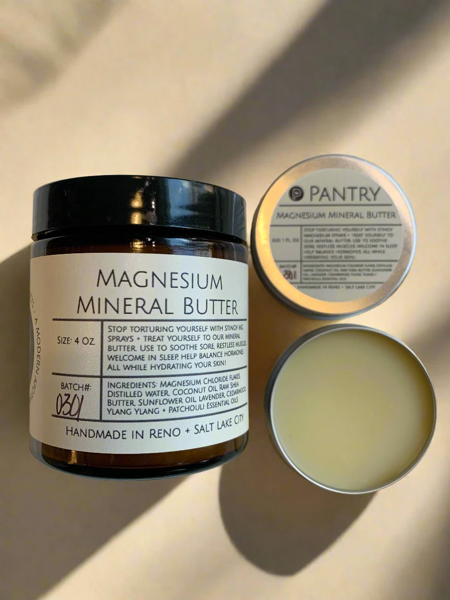
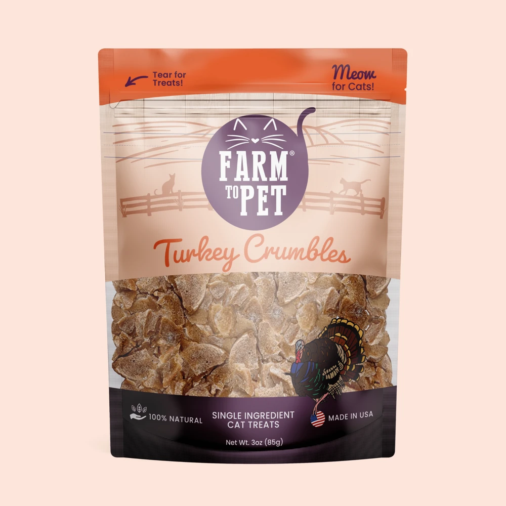
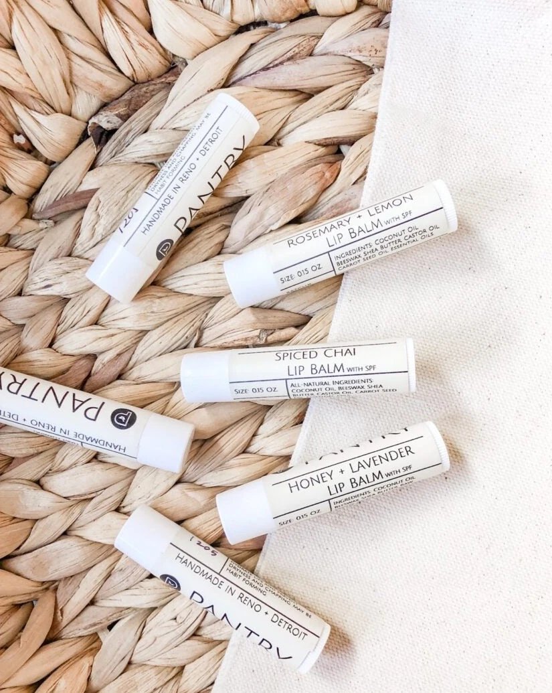
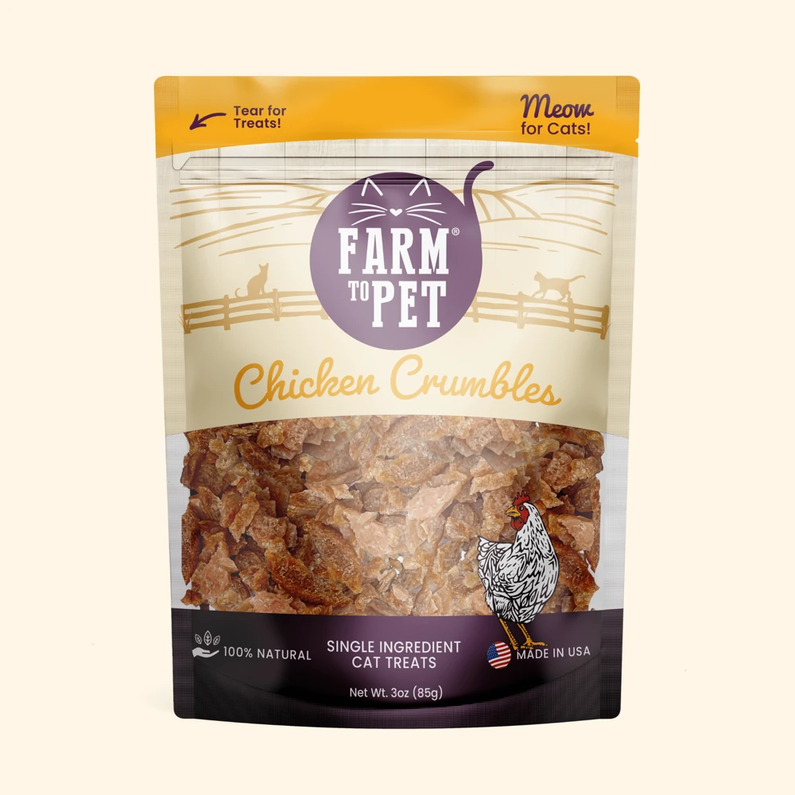

Explore AI shopping and the gift ideas shaping everyday decisions.
Lime
#BEFC4FUses: Primary actions · Focus · Links · Signal icons · Rising interest

 Design system
Design systemTrend Hunter B2C · October 2026
The visual language behind the feed.
A reference for the colors, typography, spacing, and components in Trend Hunter B2C. See the values, understand where they are used, and switch themes to compare them.
Connected to the product stylesheet feed.css. The source labels its core tokens as coming from Figma’s Feed Page; comments also identify prototype additions and theme exceptions.
01 · Foundations
Seven shared steps for padding and gaps. After 24px comes 32px, then 48px.
Editorial feed actions use an 8px gap between Share and Bookmark’s 48px tap targets. Trending Videos rails use 4px gaps; other portrait story rails retain 24px gaps.
Desktop Trend Detail pages use separate article, shopping, Answers and More Stories panels with 24px padding and 24px gaps. On mobile articles, channels and collections, More Stories keeps its 1px default-border divider with 32px of space above and below.
On mobile articles, use 32px between the prediction cards and the next divider, the divider and product heading, product cards and the Answers divider, that divider and Trend Hunter Answers, and the final question pills and the More Stories divider.
Small icon and label details
--spacing-component-xsCompact gaps and button vertical padding
--spacing-component-smCard text inset and control gaps
--spacing-component-msPanel horizontal padding
--spacing-layout-mdStandard panel padding and section gaps
--spacing-layout-lgLarger layout gaps, button horizontal padding and the mobile prediction heading inset
--spacing-layout-xlLarge section spacing
--spacing-page-2xlThe mobile heading and prediction deck are centered together inside the card, with a 24px gap between them and at least 32px of vertical padding. The outer top and bottom gaps are 0px. The card’s 1px border sits outside its padding.
Use --spacing-layout-xl for the group’s minimum vertical padding and --spacing-layout-lg for its heading-to-deck gap.
Inside the card
02 · Foundations
Each color appears once, with its shared uses listed together.
Switch themes to see the active palette. Find every named role and its dark and light values in All Tokens.
26 unique colors · shared uses grouped together
#BEFC4FUses: Primary actions · Focus · Links · Signal icons · Rising interest
#875FE7Uses: Callouts · Topic borders · Topic text · Style topics · Avatars
#0F0F0FUses: Page surface · Raised surface · Inverse icons · Inverse text
#343841Uses: Overlays
#000000Uses: Community member panel
rgba(255, 255, 255, 0.25)Uses: Borders
rgba(255, 255, 255, 0.15)Uses: Subtle borders
rgba(255, 255, 255, 0.1)Uses: Subtle fills
#FFFFFFUses: Primary text
#F5F7F9Uses: Body text
#E5E7EBUses: Secondary text
#9AA4B2Uses: Dim text
#D1D5DBUses: Utility text · Icons · Dim icons
rgba(0, 0, 0, 0.3)Uses: Scrims
#A3FC03Uses: Accent text
#697182Uses: Recommendations
#EF4444Uses: Content new · Falling interest
#FD4D13Uses: Secondary signals
#86D5A3Uses: Beauty topics
#34D399Uses: Books topics
#C8B9FDUses: Food Drink topics
#A98EEBUses: Wellness topics
#9333EAUses: Tech topics
#818CF8Uses: Fitness topics
#FDE047Uses: Culture topics
#F041FFUses: Travel topics
24 unique colors · shared uses grouped together
#BEFC4FUses: Primary actions · Focus · Signal icons · Rising interest
#875FE7Uses: Callouts · Topic borders · Accent text · Topic text · Style topics · Avatars
#F5F7F9Uses: Page surface
rgba(255, 255, 255, 0.75)Uses: Raised surface
#343841Uses: Overlays · Primary text · Dim text · Utility text
#000000Uses: Community member panel · Secondary text · Inverse text
#D1D5DBUses: Borders
#E5E7EBUses: Subtle borders
rgba(255, 255, 255, 0.1)Uses: Subtle fills
#0F0F0FUses: Body text · Inverse icons
rgba(0, 0, 0, 0.3)Uses: Scrims
#9AA4B2Uses: Dim icons
#538100Uses: Links
#697182Uses: Recommendations · Icons
#EF4444Uses: Content new · Falling interest
#FD4D13Uses: Secondary signals
#86D5A3Uses: Beauty topics
#34D399Uses: Books topics
#C8B9FDUses: Food Drink topics
#A98EEBUses: Wellness topics
#9333EAUses: Tech topics
#818CF8Uses: Fitness topics
#FDE047Uses: Culture topics
#F041FFUses: Travel topics
03 · Foundations
Barlow Condensed gives headlines and controls their character. Inter supports body copy and utility text.
Barlow Condensed
40 / 36px · Weight 800
--type-page-mastheadBarlow Condensed
28 / 28px · Weight 800
--type-card-headlineBarlow Condensed
18 / 22px · Weight 300
--type-section-headingBarlow Condensed
18 / 22px · Weight 300
--type-mobile-prediction-headingInter
16 / 22px · Weight 400
--type-bodyBarlow Condensed
16 / 18px · Weight 700
--type-button-labelBarlow Condensed
14 / 17px · Weight 700
--type-collection-labelInter
12 / 20px · Weight 400
--type-helperAvailable sizes: 12, 14, 16, 18, 24, 28, and 40px. Predict the Next Trend uses 18px type with a 22px line height at every viewport. Text can appear taller than its nominal size because glyphs and line boxes measure different things.
04 · Foundations
Match the radius and icon size assigned to the component.
--radius-x-smPrimary buttons and panels
--radius-smSmall rounded details
--radius-mdPrediction cards and vote buttons
--radius-fullPills and circular shapes
Default borders are 1px. Additional stroke tokens are 2px, 3px and 6px (--stroke-weight-6); the shared focus stroke is 2px. Theme tokens supply border colors.
12, 16, 20, 24, 32, and 48px. Collection chevrons use a 20 × 14px box. Monochrome SVG masks inherit their color from the component’s theme token. The article shortcut uses Material Symbols Outlined arrow_downward at 16px, weight 400, fill 0 and grade 0.
Icon reference
Every icon source in the app, including active and inactive states where they exist. Single-action icons keep their normal shape. The previews below reuse product classes and follow the theme switch.
33 icon families · 73 state previews · 47 icon assets · 25 Material Symbols · 3 brand marks. The asset inventory is checked against the app source at build time.
Outlined when inactive; filled lime when saved. Experimental feed: 20px graphic in a 48px target, with a 16px gap between action targets. Portrait story and profile: 32px. Article: 20px. Story hover and keyboard focus turn white, for both saved and unsaved states. The story glyph is 20px wide, aligned with Share. Article/profile follow the theme and use a separate outline layer in light mode.
24px slot with a 16px glyph. Outline off-page; filled lime on the personal profile page.
20px Material Symbols Outlined bolt in a 48px tap target. FILL 0 inactive; FILL 1 and lime active. The navigation shortcut is mobile/tablet only.
20px. The menu glyph has dark and light theme assets; opening the drawer does not change its shape.
24px. Sun switches to light theme; moon switches to dark theme.
20px. Authentication navigation.
20px filled Material Symbols. Unselected icons inherit the neutral tile label; selected icons use dark text on the supplied topic fill, with white on the deep purple Tech tile.
20px. Unchecked outline and checked lime box use the actual separate box/check layers.
48px control with a 24px gear; open state uses Material Symbols Rounded cancel, FILL 0.
Edit avatar badge.
Provider sign-in icons. The Apple mask follows the provider surface; Google retains its multicolor PNG. Both buttons hover to #E5E7EB.
Shared close action. Drawer/toast: 24px. Authentication: 20px. Share dialog uses the text ×. Source variants remain listed in the asset inventory.
No matching icons.
SVG and PNG files are listed individually. Supporting stroke/check layers are composed in the product previews above. The unused prediction-share asset is retained here for completeness; it is not presented as a live control.
auth/icon-google.pngUsed in app
auth/logo-mark.svgBrand mark
feed/wordmark-light.svgBrand mark
feed/wordmark.svgBrand mark
Font sources: Material Symbols Outlined (navigation, media and the nine topic icons) and Rounded (cancel). Inline sources: Answers thumbs and the ×, ←, →, ↗ and + text controls. Download the icon inventory.
Button reference
All button markup variants found in the app source, including links styled as buttons and controls generated at runtime. Static previews cannot sign in, vote, share or change your account.
84 source variants. The state comparisons below show only states implemented in the product. Icon-only states are also documented in Icons.
(no class)button · prediction-filter-options.html · 1 source files
answer-icon-buttonbutton · answer-page.js · 1 source files
answer-outline-buttonbutton · answer-page.js · 2 source files
answer-outline-button answer-sharebutton · answer-page.js · 1 source files
answers-submitbutton · answers.html · 2 source files
answers-suggestionbutton · answers.js · 1 source files
article-sharebutton · collection-adventure-active-travel.html · 75 source files
article-sheet-closebutton · predictions.js · 1 source files
auth-button auth-button--emaila · login.html · 2 source files
auth-button auth-button--email auth-prompt-emaila · answers.html · 98 source files
auth-button auth-button--primarybutton · login-email.html · 3 source files
auth-button auth-button--providera · predictions.js · 1 source files
auth-button auth-button--providerbutton · answers.html · 99 source files
auth-closebutton · answers.html · 99 source files
auth-close edit-profile-closebutton · userprofile.html · 1 source files
auth-link otc-resendbutton · login-code.html · 1 source files
avatar avatar--contributora · trend-ai-gift-ideas.html · 37 source files
badge-coin-choicebutton · badges.js · 1 source files
badge-popup-closebutton · badges.js · 1 source files
badge-popup-dismissbutton · badges.js · 1 source files
badge-popup-sharebutton · badges.js · 1 source files
bookmark-buttonbutton · trend-ai-gift-ideas.html · 39 source files
button-primarya · prediction-results.js · 1 source files
button-primarybutton · prediction-results.js · 1 source files
button-primary comment-submitbutton · comments.js · 1 source files
button-primary prediction-onboarding-buttona · channel-everyday-living.html · 79 source files
button-primary prediction-shortcutbutton · predictions.js · 1 source files
button-primary profile-call-startbutton · people.js · 2 source files
button-primary topic-picker-submitbutton · feed-topics.js · 1 source files
button-primary trending-video-deepera · feed.html · 1 source files
channel-buttona · channel-everyday-living.html · 3 source files
comments-more comments-text-buttonbutton · comments.js · 1 source files
comments-text-buttonbutton · comments.js · 2 source files
comments-text-button comment-likebutton · comments.js · 1 source files
drawer-closebutton · answers.html · 99 source files
drawer-linka · answers.html · 99 source files
drawer-link drawer-logoutbutton · app.js · 1 source files
edit-profile-avatar-editbutton · userprofile.html · 1 source files
edit-profile-buttonbutton · userprofile.html · 1 source files
edit-profile-button person-follow-buttonbutton · contributor-daniel-reed.html · 16 source files
edit-profile-savebutton · userprofile.html · 1 source files
feed-navigation-tabbutton · feed.html · 1 source files
feed-trend-sort-togglebutton · comments.js · 2 source files
filter-tabbutton · contributor-daniel-reed.html · 16 source files
filter-tab filter-tab--activebutton · contributor-daniel-reed.html · 16 source files
follow-buttonbutton · collection-adventure-active-travel.html · 36 source files
nav-menubutton · answers.html · 98 source files
nav-menu nav-backa · login-code.html · 5 source files
nav-predictionsa · answers.html · 98 source files
nav-profilebutton · answers.html · 98 source files
nav-text-button nav-logina · answers.html · 98 source files
pill-buttona · channel-everyday-living.html · 87 source files
prediction-card-linkbutton · predictions.js · 1 source files
prediction-card-morea · predictions.js · 1 source files
prediction-card-more prediction-result-morea · prediction-filter-options.html · 2 source files
prediction-restart-linkbutton · predictions.js · 1 source files
prediction-results-finishbutton · predictions.js · 1 source files
prediction-results-finish prediction-results-closebutton · predictions.js · 1 source files
prediction-results-finish prediction-results-okaybutton · predictions.js · 1 source files
prediction-results-togglebutton · predictions.js · 1 source files
prediction-sharebutton · share.js · 1 source files
prediction-skipbutton · predictions.js · 1 source files
prediction-vote prediction-vote--inbutton · people.js · 3 source files
prediction-vote prediction-vote--outbutton · people.js · 3 source files
profile-bio-morebutton · contributor-daniel-reed.html · 7 source files
profile-current-badgebutton · badges.js · 1 source files
profile-prediction-filterbutton · feed.html · 2 source files
recommendation-feedback-buttonbutton · feed.html · 1 source files
settings-fabbutton · answers.html · 95 source files
settings-panel-itembutton · answers.html · 95 source files
settings-panel-item settings-panel-item--two-linebutton · answers.html · 95 source files
share-menu-itembutton · share.js · 1 source files
share-sheet-closebutton · share.js · 1 source files
share-sheet-copybutton · share.js · 1 source files
share-sheet-emaila · share.js · 1 source files
theme-togglebutton · answers.html · 103 source files
toast-closebutton · answers.html · 98 source files
toast-linkbutton · people.js · 1 source files
topic-tilebutton · feed-topics.js · 1 source files
trend-card-action bookmark-buttonbutton · app.js · 81 source files
trend-card-action story-sharebutton · channel-everyday-living.html · 80 source files
trend-card-action trend-card-soundbutton · feed.html · 4 source files
trend-card-collectiona · channel-everyday-living.html · 80 source files
trend-card-playbackbutton · feed.html · 4 source files
The inventory is generated from site HTML and JavaScript. Hosting password-gate controls and controls belonging only to this design reference are outside the app inventory. Download the button inventory.
05 · Foundations
The Experimental home feed uses individual bordered story cards with 12px phone gutters. From 600px, cards fill the 482px center column with no surrounding frame or list inset. Desktop Trend Detail pages use four separate bordered panels in the middle column, scrolling with the document.
| Viewport | Feed layout | Outer spacing |
|---|---|---|
| Below 600px | Single full-width feed. Prediction panel follows the third story. | Home feed side gutters 12px. First card starts 24px below navigation. Cards are separated by 24px. |
| 600px to 959px | Centered 482px feed column. Each card fills the column; no surrounding frame or list inset. | Feed top margin 24px. Navigation uses 24px horizontal padding. |
| 960px to 1343px | 482px feed plus a 373px rail. Answers sits above predictions; discovery sections appear only in the sidebar. Home-feed cards fill their unframed column and scroll independently. Trend Detail panels scroll with the document. | 32px column gap and 24px page padding. |
| 1344px and wider | Discovery sidebar, feed, and predictions sidebar with Answers above predictions. Side rails are 373px each. | Maximum content width 1464px with 24px side padding outside it. |
Experimental home-feed cards have 2:1 media and content-driven height, with 24px between cards. More Stories retains its portrait 434:772 cards. Article text, page headings and other content retain their existing side padding. The navigation height is 61px.
06 · Components
These samples use the product’s CSS classes and tokens. They show appearance without changing your feed or account.
Primary actions use a lime fill, 2px corners, and a bold condensed label. The hover fill is lighter. Authentication actions have their own 50px height and theme treatment.
Rounded-square badges use a lime #BEFC4F inset border and Material Symbols over a slate #343841 fill, in both themes. The full badge is 72 × 72px with a 32px icon and --radius-md corners; the current profile badge is 48 × 48px with a 24px icon, overlaid on the lower-right of the 140px avatar. Only the newest visible earned badge appears there. Clicking it opens a square detail popup with a component-only 40px radius preview (not yet added to the DS radius scale), a 6px --stroke-weight-6 lime border inset by 8px --spacing-component-sm and the shared --color-scrim backdrop. Desktop details use DS Page masthead (40px/36px) for the name, 18px/28px Inter for the description, 14px/22px for both dates and the Show other badges action. On phones the name uses Card headline (28px/28px), Body criteria (16px/22px), Helper metadata and Show other badges (12px/20px), keeping a 48px action target. The symbol is 144px, or 80px on phones. The detail layout spaces the heading, large symbol, description and helper text down the square, with a 48px circular close button overlapping the top-right border at zero top/right insets, using the slate fill, a 3px --stroke-thick accent ring and the shared white 24px close icon. The button stays fully visible over the corner, with a circular focus outline. Show other badges sits near the bottom, with a 20px share icon in a 48px target to its right on earned badge details. The share control uses the existing device share flow and a link to the public reader badge or the badge catalogue. Other members’ badge details offer the close icon only and say [Name] earned this badge by, followed by the completed action. On your own badges, Show other badges flips the same popup to the five-badge collection, distinguishing lime earned icons from gray icons and names for unearned badges. Only earned badges show an Earned label; unearned badges omit To collect. Unearned details also use gray for their icon, heading and inset border. The collection grid sits 56px below Member badges (--spacing-page-2xl plus --spacing-component-sm) on desktop and mobile. It uses aligned two-line name slots, a centered final pair, and consistent state baselines, with 48px between rows on desktop and 32px on phones. The overview has the same Page masthead heading as detail views and a Flip back action at the bottom; selecting an earned badge opens its details. It grows to fit the grid on smaller screens. Selecting a badge flips to its details. Unearned details say Earn this badge by followed by the requirement, without progress counts or Not yet collected text. Earned details retain their date; Descriptions wrap at word boundaries with up to 35 characters per line; narrower screens may wrap sooner. First Call says You earned this badge because you voted on your first prediction. The opening reveal matches the incoming view flip: 300ms, half of --motion-card-flip, ease-out, without intermediate stops or overshoot. Outside clicks, including transparent rounded corners, the close icon and Escape dismiss it. Reduced motion skips flipping. A new award triggers the selected Medal burst: a 144px rounded-square earned badge with a 48px symbol and its name in --type-button-label centered in the viewport without a toast, with 24 lime, purple and mint particles radiating around it for 2500ms (2.5 seconds). It plays once per new award, then removes the badge preview and particles. Reduced motion shows the centered earned badge without animation or particles. Reset Badges clears personal progress without erasing saved calls or bookmarks; existing votes and saves become a baseline and do not re-award on reload. Public reader achievements are fictional fixtures in badge-catalog.js and separate from personal activity.
Vote on your first prediction.
Make calls on 5 different days.
Read 3 stories to the end.
Save 5 stories.
Correctly call 3 verified predictions.
Requires verified outcomes
First Call counts an actual In/Out call. Regular Hunter counts five different dates with an actual call; revisiting pages does not count. Deep Diver requires reaching the end of three different stories. Field Notes counts five distinct saved stories. Repeat reads and saves do not increase progress. Dates use America/New_York. Sharp Eye requires three correct calls with verified outcome records; the prototype has no such records and sample vote splits never qualify. Skipped cards never qualify. Read progress and follow data remain local to this prototype.
Collection detail pages use the existing Follow button. Following changes it to Following with the primary lime fill, confirms the collection name in the existing five-second toast, and offers View Collections linking to the feed’s Collections tab. Clicking Following unfollows and confirms the change. Long collection names wrap inside the toast, which stays above the prototype settings button so its link and close control remain tappable. Follows persist in this prototype browser across pages and reloads, and appear in both feed and personal-profile Collections. No account service or live analytics is connected.
Reuse the profile Predictions empty-state typography: 12px uppercase Barlow Condensed title, 14px Inter helper copy and an 8px internal gap. In the feed only, remove the empty state’s minimum height and bottom padding. The title starts 32px below the menu divider. In “Follow collections to see them here”, collections is a green underlined link to Evidence-Based Beauty. Use the shared body-link color (lime in dark mode, darker green in light mode), with a 4px underline offset. No Recommended Collections module is shown. The feed’s Collections tab shows the existing editorial trend-card design for all stories tied to followed collections, with new stories first and All / followed-collection-name filters. The personal-profile Collections tab retains its collection pills. The feed has no surrounding frame or Following heading. Opening the feed’s Collections tab clears its red new-content dot; story labels clear separately after half of the card media is visible for 600ms, including across reloads. Cards not reached remain new. This does not count as reading the article.
Photo-overlay collection pills use their full available width instead of shrinking to half the image. Keep them on one line, truncate only a long label, and retain the 48 × 6px bar and 14px percentage. Full collection names remain available to screen readers. Editorial feed labels keep their complete text and may wrap normally.
Unread counts on collection pills use a 24px red circular badge with only the number visible; its accessible label includes new story/stories.
Prototype settings includes Show new in Collections. It sets a separate manual dot preview, without resetting follows, read history or the normal occasional releases. Opening Collections clears this preview using the existing tab acknowledgment flow.
The home feed shows For You, Collections, Following and Moving beneath the main header. Other pages retain their original single-row navigation. The row uses 16px / 18px light Barlow Condensed, 32px gaps, 24px top padding, a 12px label-to-underline gap and a 3px selected underline. The 18px label line plus padding and underline creates a 57px tab, above the DS minimum 48px target. The row’s 1px bottom border brings its total height to 58px. The active underline follows the DS filter color: lime in dark mode and purple in light mode. The tab group is centered from 960px. On narrow screens the row starts at the left and scrolls horizontally. It stays with the main header. The feed’s sticky offsets include both rows. Other pages retain their original header spacing.
For You shows all 19 stories, prioritizing saved topic interests while keeping the original inline module slots. With no saved interests, stories retain their original order. Collections shows editorial trend cards tied to the followed collections, with no surrounding frame or Following heading. New stories appear first. All combines the followed collections; chips for each followed collection reuse the personal-profile filter style and show only that collection’s stories. The selected collection is stored in the URL for reload and Back. Shared stories appear once in All; all 36 collections have matching prototype articles. With no follows it uses the profile Predictions empty-state typography and links the word collections in “Follow collections to see them here” to Evidence-Based Beauty; Recommended Collections is removed. Moving has one sticky text button with a 24px lower gap. Its text starts at the panel top and aligns with the left edge of the story frame. Exactly 24px separates the text line box from the first card; the 48px target extends into this blank space without adding extra layout height. Clicking it switches Biggest rise / Smallest rise in Trending Up and Biggest drop / Smallest drop in Trending Down. Both directions default to the biggest change first. The native button uses 16px Barlow Condensed and a 48px target, with no dropdown, border or background. Enter and Space also switch the order; the focus outline and live result count make the change accessible. The choice persists in the URL for reload and Back. Trending Up filters rising stories and sorts them by percentage gain, highest first; ties retain their original order. Trending Down filters falling stories and sorts from the largest percentage decline to the smallest; ties retain their original order. Returning to For You restores its saved-interest order. Inline modules are hidden in filtered views; their state is preserved. Selected views survive reload and browser history through the URL hash. Left / Right, Home and End move between tabs. The selected tab and panel are labelled for assistive technology, with a live result count. The daily completion section has a 1px default border and 2px corners, fits its content, with 24px padding on all sides and no fixed aspect ratio or vertical centering. The full footer appears only in For You; Collections, Trending Up and Trending Down hide it.
Occasional sample releases in four collections drive the same unread state across the red Collections-tab dot, a red count tag on personal-profile collection pills and a small New in a collection you follow label on matching For You stories. The tag names the content, such as 3 new stories. Opening Collections acknowledges the current updates and immediately clears the navigation dot, including when using the keyboard or a direct Collections link. Each story’s new-content label clears after at least half of its media has been visible for 600ms. Offscreen cards keep their markers. Seen-card state persists across visits without claiming the article has been read. A separate browser-local acknowledgment keeps the dot cleared on reload and Back; later unseen releases can show it again. Unfollowing immediately removes that collection from the signal. Red uses --color-content-new (#EF4444), with a dark 14px bold badge label for contrast and an 8px dot. Counts are included in the tab’s accessible name. The example releases are fixed browser-local prototype data, not timed or random notifications.
The separate Following feed tab shows public activity from followed creators and members with All / Creators / Community filters. The All / Creators / Community filter row floats above its cards while scrolling, matching the collection filters with an opaque surface and 24px bottom padding. Creator articles use the same editorial card; member predictions use the shared comparison row. Signed-in visitors who have not voted see Make Your Call below the member’s badge. It opens the same In / Out choices used on creator profiles; submitting saves the personal vote and shows You’re in / out without changing the member’s call. Signed-out visitors have no call control. Context labels use the same 16px/18px regular Barlow Condensed typography as recommendations and are left-aligned with the card content. They name the person, such as Daniel published a new story or Jamie made a prediction. Activity is illustrative, without fake live timestamps. Each creator and member profile has Follow / Following in the Edit Profile position. Signed-out Follow actions open the login screen, remember the person, then return to that profile and complete the follow with a confirmation toast. The owner keeps Edit Profile and gets a Following tab for managing people, with the same filters and an Undo toast on unfollow. Saved articles are not broadcast as activity. Collections filters remain separate and sticky over the story cards, with exactly 24px from filter pills to the first card and an opaque 24px lower gap while sticky.
Moving unifies rising and falling stories with All / Trending Up / Trending Down filters. The existing text sort switches biggest / smallest change, rise or drop for the selected direction. Old trending-up and trending-down links still select their direction. Collections and Following feed tabs are available only while signed in, with hidden tabs excluded from keyboard navigation.
Following uses the same red unread dot as Collections. Opening it acknowledges current illustrative releases; new releases or Show new in Following can restore the dot. The manual preview is separate from follows and normal release history. Clicking a personal-profile collection pill clears its count and story markers without marking the article read. Reset Collection Updates restores unread card cues while retaining article read history.
A grouped alert sits before the first story in For You. The prediction bolt carries the same red dot as collection updates. Reveal results opens a centered dialog with the shared 300ms incoming flip, a sample editorial call, the reader’s call and You called it / Your call was different. Next result moves through the group. Viewing a result clears its unread marker without deleting its record. View results opens Your Profile → Predictions → Resolved with the selected record centered and focused. Each record links to an outcome article for What happened, Why the call was made, How it is developing, evidence and the next review. The original story remains linked.
Show prediction results in prototype settings creates separate, explicitly labeled fictional outcome records. It preserves actual call directions when available; otherwise it uses three sample votes without changing the visitor’s deck votes. These examples never award Sharp Eye and do not claim verified real-world outcomes. Production needs an editorial outcome service and email delivery; this browser-only prototype sends no messages. Signed-out visitors reaching the end of the deck see sign-in/account options even when every card was skipped. A signed-in completion uses Body for We will alert you when the results drop.
Hunt What You Like is available on desktop as well as mobile. Collection pages place a compact horizontal topic picker between their complete collection-story list and More Stories. Three tiles and part of a fourth are visible to communicate scrolling. It retains the nine topic colors, empty initial selection, disabled initial CTA and reset after submit. Saving from a collection opens the personalized feed.
Desktop and mobile feed, after three story cards following Trend Hunter Answers. Nine square toggle buttons use a three-column grid with 8px gaps, 12px tile padding (8px below 360px), 20px filled Material Symbols and 16px uppercase Barlow Condensed labels. The frame uses the feed’s 1px border, 2px radius and 12px top/bottom padding at every viewport, 16px phone side padding (24px from 600px), with 24px above the grid and 16px before the full-width 48px Update My Feed CTA. The primary CTA starts disabled and enables when any topic is selected. Each topic can toggle independently; deselecting the last topic disables the CTA. Selected fills use the nine supplied colors in reading order. Keyboard focus has a 2px ring with a 4px offset and aria-pressed exposes selection. Update My Feed saves these browser-local prototype interests, prioritizes existing stories by how many selected topics they match, returns to For You at the top and confirms “Your feed has been updated.” with the existing toast. All 19 stories remain available; equal scores keep their original order. Discovery modules keep their story-slot cadence, including three stories between Answers and this picker. Saved preferences continue to apply on reload and desktop. The picker itself always starts unselected, and successful submission clears its draft selections and disables the CTA. Failed saves retain the selection for retry. Trending Up and Down retain their own ranking; collection follows stay separate. Beauty and Books currently have no matching story in the demo feed, so those choices save without changing its order.
For You only, on desktop and mobile, immediately before the daily feed completion. Four curated sample stories alternate rising and falling movement, with illustrative recency labels. The 1px frame uses 16px phone padding and 24px from 600px. Slides occupy 85% of the track, with a 16px gap and a visible next-card peek. Images use a 4:3 crop and three-line Card headlines reuse the editorial card typography. These compact discovery cards omit Share, Bookmark and author-avatar controls. Swipe, horizontal scroll or Left/Right on the focused track browse the stories. Story links open the matching articles. The completion below it shows four collection pills.
 Evidence-Based Beauty
Evidence-Based Beauty
Moved up · 1 hour ago
 Back-to-School Transitions
Back-to-School Transitions
Moved down · 2 hours ago
 Retailtainment Hubs
Retailtainment Hubs
Moved up · 3 hours ago
 Clean Living Control
Clean Living Control
Moved down · 4 hours ago
 Andropause & Hormonal Midlife
Andropause & Hormonal Midlife
Two illustrative For You cards have a Recommended for you label above their image: #697182, 16px Barlow Condensed text and direct thumb_up / thumb_down controls on the right. Each feedback control has a 20px Material Symbol and a 48px target; there is no info popup. The label stays with its story when the feed is personalized and is hidden in Trending views. All 19 home-feed stories use the bordered reference layout: landscape media, collection label with its directional chevrons, full headline, then an Editorial footer with the author’s original portrait and full name on the left and the original Share and Bookmark actions on the right. The image and headline open the matching article. The retailtainment story now uses the supplied still image and opens its article. Video playback is provided by the separate Trending Videos carousel. Summaries and Go Deeper are replaced by these direct story links.
Every spacing value uses an existing DS token. Card colors follow the selected theme. The original Share and Bookmark SVG masks have matching 20px visible heights; Share keeps its original proportions at about 25.5px wide, while Bookmark retains its 20px box; author images remain 24 × 24px. Share and Bookmark have 48 × 48px targets; the author profile link is at least 48px tall. The author name reuses the shared 14px Barlow Condensed contributor byline and hover behavior. Discovery modules use matching bordered panels. Portrait story cards on other pages retain their original component.
The secondary action below the daily stack is View my active predictions, 24px below it, with the number of actual saved active calls. It opens Profile → Predictions → Active directly via userprofile.html?prediction-filter=active#predictions. The previous standalone All open predictions URL redirects to that same existing profile view. The profile filter persists in the URL for reload and Back; no new directory is shown. Votes on earlier, still-open prototype predictions remain part of the personal active history. Dates and splits are illustrative.
Read More from a prediction card, creator profile, personal history or result row opens the matching article. Its exact prediction is placed first in the three-card deck, with no onboarding cover, Get context or duplicate Read more on that first card. The other pending cards retain their own Get context controls, including when two predictions share an article.
The same flow applies on desktop, mobile and article sheets, and survives reload and resizing. An unanswered first card has the existing In / Out controls. An existing call remains locked and displays You’re in / You’re out, with Next prediction to reach the cards behind it. Resolved examples retain their historical call or Voting closed, without accepting a new vote. Profile-only example calls remain separate from personal voting history.
Try Read More from a creator profile · Open Daily Predictions
Below 960px, every article ends with the tall voting and context deck beneath a centered “MAKE YOUR CALL” heading. It uses the same 280 × 376px cards and Get context behavior as the main deck, replacing the compact article cards. At every viewport, Read More arrivals put the exact selected prediction first without Get context or a duplicate Read more; cards behind it keep their context controls. Recorded calls remain locked on the first card, with Next prediction to continue. That heading disappears when “Your calls are locked in” results replace the deck, and returns when predictions are dealt again. The inline deck and its divider are hidden on desktop. Mobile readers arriving through a prediction’s Read more link get a compact purple Make your call shortcut while reading. It has no black outline or shadow and uses the Material Symbols Outlined arrow_downward icon. It jumps to the voting deck, hides when the deck is visible, and stays hidden once calls are complete. Each context face has a Read more link to its matching article. The ten predictions cover TRT, AI shopping, discount retail, store events, protein coffee, skin longevity, sleep rituals, run clubs, sober socials and home comfort. Context links and arrows keep the card’s text color inside articles. Read more stays inline with the context paragraph. An empty line of at least 22px separates that paragraph from the vote buttons. Predict the Next Trend is hidden on both desktop and mobile while results are displayed and returns with the cards. The results heading starts 24px below the panel’s top border. Mobile feed results keep their existing 434 / 772 portrait frame. The heading stays 24px from the top and the list fills the remaining height with internal scrolling. Voting-result panels use one 24px inset on every side on desktop and mobile. The panel owns this padding and its inner result content adds no second inset. Inline article results also use 24px padding; personal and community profile histories keep their existing layout. Finish today’s predictions uses the DS secondary hover fill and focus ring. On mobile a divider separates predictions from More Stories. Result rows use the default design-system border token for their dividers, with 24px above and below each line and no divider under the last row. Each saved result places the headline on the left and its personal vote badge at the top right. Read more sits directly beneath the headline in the same left column. Sample In/Out percentages and a full-width lime/orange split bar sit below that heading group, separated by a 16px gap. The prototype percentages are illustrative and sum to 100%. Both You’re in and You’re out badges use the same position beside the headline. Links retain the shared DS type, underline and forward arrow. Links share the cards’ underlined label and forward arrow, and respect the existing story-page or sheet setting. Opening a story from results places that prediction first in the same three-card deck, with its saved call locked and Next prediction to reach pending cards. The singular Your call is locked in result view appears after the deck is completed. A full-width secondary View my other votes button reveals the other saved votes, then disappears so the expanded list remains visible. Those links open the matching story and place the selected prediction first. Reloading retains that selected prediction and its saved call. Articles opened from a prediction’s Read more use Make your call as the deck heading on desktop and mobile, including after reload. Saved-vote results keep their existing result heading. On Read More arrivals the selected prediction is first and has no Get context or Read more controls on desktop and mobile. All cards behind it retain their context controls. Get context and Back to call use a 10% white background by default and 15% white on hover or keyboard focus, from the shared tertiary hover token; text and flip icon stay white.
Experts Predict The Next Trend.Are you in or out?
The panel sits in the right rail on desktop. Below 960px it moves after the third story in the feed, with a 24px gap between its heading and deck.
The stack scales down on narrow phones. In the mobile feed, the voting panel hugs its heading and deck with 16px top and bottom padding and a 24px gap between the heading and deck. It appears after the first three stories below 960px; desktop keeps it in the sidebar. The completed results view retains its existing scroll frame. Prediction cards show the custom Share icon in the top-right corner; opening it shares that prediction’s related story.
Suggested questions and the search field open answers.html with the selected question. The answer uses the site navigation, centered readable panel, question title, illustrative source mix, article sections, citation chips, feedback, Share, source-story carousel and related questions. Follow-ups add another fictional response to the same thread; the thread survives a reload in this tab. New thread returns to an empty question form.
All answer copy, source labels and percentages are fictional examples. There is no AI service or live publisher attribution. Nine common question topics use tailored sample content; other questions use a general fictional outlook. Questions render as plain text and are limited to 200 characters; a thread supports six questions.
Preview an answer page · Start a new question
The email action uses white at 15% opacity on hover, including the dark authentication prompt.
Trending Videos uses four different user-supplied clips: a city content walk, an LED skincare lounge, meal prep and a laundry reset. Each preview links to its own fictional Trend Detail article, whose main video uses the full 16:9 source aspect ratio. Visible previews autoplay muted. Tapping the video body pauses or resumes playback with the existing transient play/pause feedback. A primary Go deeper link opens the matching article, while the 48px sound control restores or mutes its original audio. Reduced-motion preferences start playback paused. Only one preview plays at a time. Offscreen pausing and keyboard support are shared with the article players. The 9:16 video cards use --radius-md (10px) corners and clip their media. The second editorial feed story now uses the supplied still photograph and links to its article.
The retailtainment article uses the supplied still photo as its main image. The city content-walk article uses a tall 9:16 video frame with muted autoplay, tap to pause/play, sound control, offscreen pausing and reduced-motion behavior.
Saved vote rows use the same product classes as the feed and article results. The headline sits on the left, the personal vote badge sits at the top right, and Read more appears below the headline when it links to another story. The full-width In/Out bar sits below this group. Percentages shown here are sample data.
On desktop, finishing all daily calls adds an Okay button. It replaces the results with a compact My Predictions panel using the existing 20px bolt and a pill displaying the actual number of active voted calls; skipped cards never count. The pill opens Profile → Predictions → Active. This dismissed state persists in the tab. Skipping every daily prediction instead shows Nothing to call today, Come back tomorrow for new predictions, Close and an underlined Make today’s calls action. Close shows My Predictions; Make today’s calls restores the skipped daily stack without erasing saved votes. Prototype Deal again resets the dismissal.
The badge records your own call. It stays independent of the sample audience split. Both badge states use the same top-right position.
Feed results scroll inside the card. Article results expand with the page. The final row has no divider.
The current article shows one saved vote without a redundant Read more link. This example button reveals another sample vote and disappears. It does not change your stored votes.
More people will use AI to prepare for the holidays this year
You're in
More shoppers will turn to dollar stores as cost of living rises
Read moreYou're out
Personal profiles retain compact All, Active and Resolved pills. Author profiles retain Posts and Predictions, with both people’s calls displayed together inside Predictions.
The creator’s call sits at the top right. Signed-in readers see their own call or Make your call directly beneath the creator’s badge, above the proportion bar in the same card. Signed-out readers see the creator’s predictions and results without Make your call or voting choices.
Personal filters keep their existing 16px type, 4px vertical and 16px horizontal padding, 32px minimum height and 8px gap. Personal profiles retain Saved, Collections and Predictions. Signing in from an author’s Predictions returns to that section.
Personal histories retain actual active calls plus three illustrative resolved calls once activity exists. Author histories remain fictional examples. Empty personal histories hide their status filters. Resolved calls retain muted badges.
You’re in
You were in
You were out
On first opening Predictions, comparison rows fade and rise 12px over 500ms with a 70ms row stagger. Their percentage labels fade in and split bars reveal from left to right over 650ms. The entrance plays once per page load and is skipped for reduced-motion users.
Contributor and community profiles show the profile owner’s vote beside the headline, Read more beneath the headline, your own vote directly beneath the creator’s badge, and a full-width proportion bar below both calls. The former Your votes / creator’s votes filters are removed. Contributors retain Posts and Predictions; community members retain Saved, Collections and Predictions. Community predictions remain read-only and only show your actual saved call when you have voted; they never offer Make your call or invent comparison votes. Personal All, Active and Resolved filters keep their current behavior.
Telehealth TRT and GLP-1 stacks will force insurers and FDA to redefine normal thresholds
Read moreSamantha is in
Telehealth TRT and GLP-1 stacks will force insurers and FDA to redefine normal thresholds
Read moreSamantha is in
Telehealth TRT and GLP-1 stacks will force insurers and FDA to redefine normal thresholds
Read moreSamantha is in
Each creator profile also includes three made-up sample predictions, documented here and kept separate from the personal voting history. Three illustrative states: you called In, you called Out, and you have not voted yet. The creator’s call stays visible in every state. Make your call reveals the existing In / Out buttons in the same row. The live profile saves actual prediction choices in shared browser voting history and sample choices separately; this isolated example changes only itself. Read more on every row opens its exact prediction at the front of the related story’s three-card stack, without context or Read more on that card. Recorded calls remain locked with Next prediction; other cards keep Get context. Its section heading is Make your call on desktop and mobile, including after reload. It bypasses the onboarding cover at every viewport. Signed-out readers see the creator’s badge, headline, Read more and proportion bar without Make your call or inline voting choices. Make your call appears only for signed-in readers who have not voted. Resolved reader calls say You were in / You were out, use the existing muted treatment and cannot receive new votes.
Uses the existing headline, link, split bar and badge styles; 12px between the creator’s badge and the reader’s call, filled creator badges and background-free You’re in / You’re out reader labels, 8px between each icon and label, lime reader text and icons for In and orange-red reader text and icons for Out and a transparent Make your call button with a purple outline, label and right arrow. Its outline, label and arrow turn white on hover or keyboard focus in the dark theme. Make your call matches the creator badge’s width, 33px height and typography. Every call column is fixed at 128px across all comparison rows, so creator In and Out badges stay the same width whether the reader has voted or sees Make your call. Creator badges and Make your call use 4px left and right padding. The reader label and Make your call use the same column width. The reader keeps its typography, padding, 33px height and icon position, with no background. Creator badges keep their filled state colors. Other prediction screens retain their existing filled reader badges.
Open Samantha’s combined predictions · Open Daniel’s combined predictions
Use these states when there are no saved stories, followed collections or recorded predictions. Center a 12px Barlow Condensed uppercase heading above 14px Inter helper text, with an 8px gap. The heading starts 32px below the tab divider, using the profile’s 24px panel gap plus 8px of empty-state padding. Keep the current theme’s surface and text colors.
Bookmark stories to see them here
Follow collections from their detail pages to track them here
Vote on prediction cards to track them here
All, Active and Resolved filters stay hidden until a personal prediction exists. Author profiles keep their author history visible and show Make your call only to signed-in readers whose vote is absent. Signed-out readers keep the creator’s history and results without the call button. Demo author votes never fill a personal profile. The Collections panel uses the same saved follows as the feed. Its empty state appears only when no collection is followed.
When an author has no posts or votes, show these messages using their first name. Existing posts and author votes stay visible. Both calls appear together on author profiles. If a signed-in reader has not voted, existing author predictions remain visible with Make your call. Signed-out readers see the author’s predictions and results without that button or voting choices. Only an empty author history shows the author prediction empty state.
Profiles use 16px left and right page padding. Personal filter buttons retain their existing dimensions. Both empty states use the shared heading and helper-text styles.
The signed-in profile icon opens the shared Menu drawer component from the right, with Your Profile and Log Out separated by the shared full-width DS divider. Log Out appears only in this account drawer, not in the left Menu drawer. Your Profile opens the user profile. Log Out ends the sign-in session and returns to the feed. The close icon, Escape key and scrim dismiss the drawer.
Log Out in this isolated example closes the preview. Use the live prototype to check actual sign-out.
The lightning shortcut appears before the theme control on mobile and tablet, below 960px. It is hidden in desktop navigation. It opens the dedicated Daily Predictions page; the selected icon uses var(--color-border-focus). This page reuses the shared prediction deck, votes, context and results.
Continue with Email opens the email form, six-digit code and Terms and Policies. The ready, error and enabled states use shared form colors, 16px body text and 50px controls. Inline errors use the existing code error red. Enter 123456 in the prototype to continue; other codes show the error state. No email is sent.
That doesn't look like a valid email. Double-check and try again
The trail continues in your inbox
You entered an incorrect code. Please try again.
Please check this field if you want to proceed.
Code entry advances automatically, supports pasting all six digits, arrow keys and Backspace. Resent code clears errors and renews the 15-minute window. Continue is visually and ARIA disabled until consent; pressing it while unchecked reveals validation without advancing. The password alternative uses demo. Signing in returns to the originating page and section.
Try the sign-in flow · Compare three prediction filter options
Articles show You might be interested in after the prediction section and before Trend Hunter Answers on desktop and mobile. The 18px heading introduces four static product cards in a horizontal carousel with two complete cards and a 24px peek of the next card to communicate that more products are available to the right. Product photos, names, prices and Shop Now labels retain the same layout at every viewport. Swipe, scroll horizontally or focus the carousel and use Left/Right to browse. Shop Now matches the 18px price size, with an 18px arrow centered beside it and a 4px gap between label and arrow. The price-to-action gap stays 8px. Both use #BEFC4F in both themes and turn primary text color on hover (white in dark mode), without an underline. Shop Now has no link or click action. The carousel has no edge fade. Product cards remain static. On mobile there are 32px on each side of the section dividers. On desktop shopping has its own 1px default-border panel with 24px padding, separated from article and Answers panels by 24px gaps.
Open the shopping module in an article

$15.99Shop Now

$3.99Shop Now

$9.00Shop Now

$11.95Shop Now
Generic editorial bylines use six fictional names and generated portraits, with a mix of women and men. Transparent images retain the existing purple avatar background, #875FE7, through the color-icon-avatar token. Matching story avatars use the same author as their destination article. Each story card uses the same author photo as its article. Fictional avatars link to a matching contributor page with a short and expanded biography, location, interests and article list. Predictions is interactive. Author profiles show the creator’s vote and the reader’s vote together in one prediction row. They have no secondary vote-history filters. Signed-out readers see the creator’s calls and results without Make your call or voting choices. Signed-in readers who have not voted retain Make your call. Personal All, Active and Resolved filters are unchanged. Both views reuse the shared result row, including muted historical badges for resolved calls. The original contributor layout is reused.
On the desktop feed, Answers uses a bordered panel above predictions with a left-aligned 18px heading. On the mobile feed, it follows three stories after Trending Videos and uses the same compact framed panel as desktop: a left-aligned 18px heading, a full-width search field and two horizontal ticker rows. The frame uses the default 1px border, 2px radius and 24px padding, aligned with the feed cards. Every question pill uses 16px Inter. The nine-pill vertical mobile list is removed. On articles, Answers aligns with the More Stories content edge and the search field and ticker fill that width. At 960px and above it has its own bordered panel, with 24px padding and 24px gaps between panels. Article pages use the two-row ticker after article content, predictions and product recommendations, directly above More Stories. On mobile, a divider separates products from Answers with 32px of space on each side. The ticker has 16px text, 12px gaps, a 22-second loop, and 24px edge fades. Mobile article variants remain inline; the mobile feed has a frame. On mobile articles the last row of pills is 32px above the divider before More Stories, with 32px from that divider to the heading. The input is 40px tall with a 24px submit circle and matching 12px left and right control insets. Suggested questions and submitted questions open the Answers page. Follow-ups add a fictional response to the same thread, and related questions open a new answer.
Four collection pills with directional chevrons. Below 960px they appear after the third story following Predict the Next Trend in the home feed. On desktop they appear only in the sidebar. The mobile section has a default 1px border, 2px radius, 12px top/bottom padding at every viewport, 16px phone side padding (24px from 600px), a 24px heading gap, 24px list gaps and the shared pill button style. Sidebar and mobile both show the top four collections. Each pill opens its own collection page with a description, curated stories and related collections.
Below 960px, Now Trending appears after three full story cards following More to Explore. On desktop it appears only in the sidebar. Sidebar and mobile both contain three thumbnail story rows. The mobile section uses the same 1px border, 2px radius and 12px top/bottom padding at every viewport, 16px phone side padding (24px from 600px) as the other feed modules. Each row pairs a 128 by 125px thumbnail with an 18px bold headline. Rows use a 12px image gap and a 24px vertical list gap. Each story row opens its matching article page.
A single featured video follows the first three story cards on mobile and desktop. It uses the same portrait player and story controls without carousel grouping. A bordered feed carousel follows the twelfth story on mobile and desktop. Four different supplied videos use 9:16 previews with 10px --radius-md corners, 16px gaps and 90%-width slides, leaving a visible peek of the next video. Headings wrap naturally across the available copy width, reserving space for the control rail without forced short line breaks or unused line-height reservation. The heading-to-CTA gap is --spacing-component-ms (12px). A Go deeper CTA uses the unchanged shared Primary button tokens and opens its matching fictional article. The single featured video uses --type-card-headline (28px/28px Barlow Condensed). Carousel titles use --type-button-label: 16px/18px Barlow Condensed at weight 700. A right-side vertical rail stacks Volume, Share, Bookmark and the author avatar, with --spacing-component-xs (4px) gaps and 48px targets. Volume uses --icon-size-lg (24px). Bookmark uses --icon-size-md (20px), matching feed actions. Share also uses the shared feed rule: 20px high with its original proportions, about 25.5px wide. The author avatar uses --icon-size-lg (24px), matching feed author portraits. All targets remain 48px. The lower fade reaches black and the controls sit beside the three-line title and Primary CTA. The headline and Primary Go deeper link stay to its left, with reserved space so text never runs beneath the controls. A mostly visible clip autoplays muted; tapping the video body pauses or resumes with the existing transient play/pause feedback. The sound control restores the original audio. The author avatar opens the story creator profile. Share and Bookmark refer to the matching article and use its canonical story ID, title and poster; the clip itself is never saved. A next-card peek never starts a competing clip. Reduced-motion preferences start the video paused. Play, pause and mute are keyboard accessible; only one carousel clip plays at a time. Leaving the view or tab pauses playback. Swipe or use the focused carousel’s Left / Right arrow keys to browse. Answers follows three stories after this carousel in the mobile feed.
The sticky navigation is 61px tall. The centered wordmark is 26px high and 104px wide below 960px. On desktop it is 40px high and 160px wide. Both sizes preserve the SVG’s 4 to 1 ratio. Menu and account controls sit on either side. Mind-Body, Everyday Living and Experiences each have a working channel page using the same masthead, collection-list and story-card structure. Both logo variants use the same dimensions.
Collections use four logo-inspired chevrons in a 20 × 14px box. Green points right for rising interest; red points left for falling interest. A 0–100 score determines the illuminated count: 0–25 lights one, greater than 25 through 50 lights two, greater than 50 through 75 lights three, and greater than 75 through 100 lights all four. Remaining chevrons use a 22% tint. Boundaries belong to the lower band, with scores clamped to 0–100. The same score and level apply across pills, story labels, mastheads and dynamically followed collections. Accessible labels and tooltips retain direction and the sample percentage. These are illustrative prototype scores, not live analytics.
Andropause & Hormonal Midlife
Back-to-School Transitions
The collection link above a story title changes its label to primary text on hover and keyboard focus: white in dark mode, dark in light mode. There is no underline, pill outline or background, and the interest indicator retains its signal color. Light surfaces darken the percentage with existing DS color roles for readability. Screen-reader labels and tooltips state Interest rising or Interest falling, so direction is also available without color.
Use 8px between avatar and credit, then 4px between By and the author name. The name changes to primary text on hover, white in dark mode, with no underline.
Share opens the device’s native sharing menu directly from story cards, predictions, articles, collections and Answers. It shares the relevant title and link. Available destinations and appearance come from the device and browser; on macOS these may include AirDrop, Mail, Messages and Notes. The app does not recreate system icons or extension settings.
Share uses the same interactive states across stories, predictions, article headers and Answers. Default icons keep their existing gray or photo-card color. Hover turns the arrow white in dark mode and dark on light page surfaces, with no background. Pressing turns it #BEFC4F immediately; it stays lime while the native share request or fallback dialog is open, including during hover or keyboard focus. Dismissal restores the default or hover color. Keyboard focus adds a 2px ring with a 4px offset: lime on dark surfaces, purple on light page surfaces, and lime on photo and purple prediction cards in both themes. Icon size and position stay fixed throughout.
Cancelling the system menu returns to the page. Browsers without native sharing open a copyable-link dialog with Copy link and Email; a successful copy shows Link Copied in lime for 5 seconds, with no success toast.
Short phrases within story paragraphs link to relevant collections and related stories. Links stay underlined, using #BEFC4F in dark mode and #875FE7 in light mode through the article link tokens.
Explore AI shopping and the gift ideas shaping everyday decisions.
I’m out and I’m in keep their black fill, labels and state-colored icons. Hover adds a 15% white overlay using buttons/tertiary/bg-hover, fading in and out over 150ms. Reduced-motion users get an immediate state change.
White field surface with a lime focus border. This example does not submit data.
Toasts use the dedicated overlay palette in both themes. The feed’s toast dismisses after five seconds, pausing while hovered or focused. It also has a dismiss control.
07 · Behavior
Shared timings keep entrances, transitions, and prediction gestures consistent.
| Token | Duration | Used for |
|---|---|---|
--motion-toast-enter | 450ms | Toast entrance |
--motion-toast-exit | 200ms | Toast dismissal |
--motion-drawer | 350ms | Menu drawer |
--motion-sheet | 400ms | Article sheet |
--motion-card-settle | 200ms | Prediction card spring back |
--motion-card-fly | 460ms | Prediction card dismissal |
--motion-card-flip | 600ms | Prediction context flip |
--motion-results-fade | 400ms | Prediction results entrance |
--motion-answers-ticker | 22s | Answers suggestion ticker loop |
--motion-comparison-enter | 500ms | Creator prediction rows appear |
--motion-comparison-split | 650ms | Creator prediction split bars reveal |
--motion-comparison-stagger | 70ms | Creator prediction row stagger |
These timing tokens are documented in the source as prototype definitions and sandbox deck values. The stylesheet includes reduced-motion rules for drawers, sheets, toasts, and prediction effects.
08 · Reference
Search by name or value. The active value reflects the selected theme and this viewport.
| Token | Dark | Light | Active | Copy |
|---|
No tokens match this search.